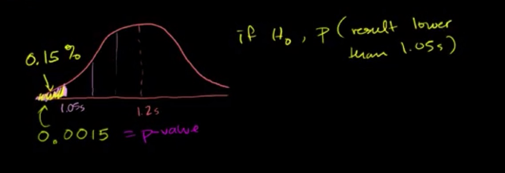
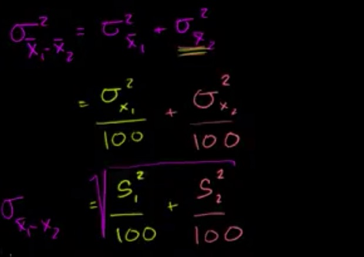

假设检验
神经学家测试一种药物对反应时间的效果，分别对100只老鼠注射一单位剂量的药，已知没有注射药物的老鼠的平均反应时间为1.2s。100只被注射药物的老鼠的平均反应时间为1.05s，标准差是0.5s，我们想知道的是这个药对反应时间到底有没有用。
为此我们可以建立一个假设：
\(H_0\)：药没用 \(\Rightarrow\) \(\mu=1.2s\)
也可以建立一个备择假设：
\(H_1\)：药有用 \(\Rightarrow \mu \neq 1.2s\)
先假设原假设是正确的，然后我们可以用采样的100个数据的标准差来近似原分布的标准差：
$$
\sigma_{\overline{x}} = \frac{\sigma}{10} \approx \frac{S}{10} = 0.05
\
Z = \frac{1.2-1.05}{0.05} = 3
$$
所以如果原假设成立的话，我们只有 0.3% 的可能性得到样本的那种情况，所以我们拒绝原假设，选择备择假设
双侧检验和单侧检验
我们上面进行的是双侧检验，所以并不能知道这个药使得反应时间是升高了还是降低了，所以我们需要用单侧检验
\(H_0\)：药没用 \(\Rightarrow\) \(\mu=1.2s\)
\(H_1\)：药降低反应时间 \(\Rightarrow \mu < 1.2s\)

如果原假设成立的话，那么 P(采样均值低于 1.05) = 0.15% ，这个概率是非常低的，所以我们拒绝原假设。
z 统计量和 t 统计量
z 统计量：
$$
z = \frac{\overline{x}-\mu_{\overline{x}}}{\sigma_{\overline{x}}} = \frac{\overline{x}-\mu_{\overline{x}}}{\frac{\sigma}{\sqrt{n}}}
\
\approx \frac{\overline{x}-\mu_{\overline{x}}}{\frac{S}{\sqrt{n}}}
$$
如果 n >30 那么采样均值的分布将近似于 正态分布，如果 n 很小的话，则近似于 t 分布
t 统计量：
$$
t = \frac{\overline{x}-\mu_{\overline{x}}}{\frac{S}{\sqrt{n}}}
$$
第一型错误
第一型错误指的是拒绝了正确的原假设，比如我们最开始讲的例子，如果我们拒绝了原假设我们会犯错的几率大概是 0.3%，因为它还是会有0.3% 的可能性使得样本均值为1.05， 这个几率虽然小，但也不可能不发生。
小样本假设检验
这个时候我们就要用 t 分布。
比如一个新的设计的所有引擎的平均排放量需要小于20ppm 现有10个引擎被测试，它们的排放量分别为：
15.6 16.2 22.5 20.5 16.4 19.4 16.6 17.9 12.7 13.9
想知道这个引擎是否满足要求，假定我们愿意冒 0.01 概率的风险接受第一型错误。
可以算出
$$
\overline{x} = 17.17
\
S = 2.98
$$
\(H_0\)：\(\mu=20 ppm\)
\(H_1\)：\(\mu < 20 ppm\)
根据题意，当 \(P(\overline{x}=17.17 | H_0 \ true) < 1\%\) 拒绝 \(H_0\)
我们可以算出
$$
t = \frac{17.17-20}{\frac{2.98}{20}} = -3.00
$$
由上图我们可以看出拒绝原假设
t 统计量置信区间
还是上面的例子，不过我们现在想知道均值 95% 置信区间的范围
$$
t = \frac{17.17-\mu}{\frac{2.98}{20}}
$$
查表可以发现要使得 t 的置信区间为 95%，t 的范围要在 (-2.262, 2.262)，所以可以得到 \(\mu\) 的范围在 (15.04, 19.3) 的置信区间是 95%
大样本占比假设检验
我们想要以5% 的显著性水平检验是否有超过 30% 的美国家庭接入了互联网，然后我们采集了150家的数据发现57家有接入，然后我们就建立了两个假设
\(H_0\)：P<=30%
\(H_1\)：P>30%
假定 \(H_0\) 是正确的，我们可以把它看成伯努利分布
$$
\mu = P
\
\sigma = \sqrt{P(1-P)}
$$
那么在采样分布中
$$
\mu_{\overline{p}} = \mu
\
\sigma_{\overline{p}} = \frac{\sigma}{\sqrt{150}}
\
\overline{P} = \frac{57}{150} = 0.38
\
z = \frac{\overline{P}-\mu_{\overline{p}}}{\sigma_{\overline{p}}} = \frac{\overline{P}-P}{\sqrt{P(1-P)}}
$$
可以看出 P 越小的话 z 会越大，那么 P(z) 就是非常小的，而在原假设中 P 最大就是 30% 也就是 z 最小就是 2.14，而这个时候已经小于显著性水平的范围了，所以我们拒绝原假设。
随机变量之差的分布
假设有两个随机变量 X,Y 完全独立，则可得到它们之和，之差的均值和方差
样本均值之差的分布
均值之差的置信区间和假设检验
我们想要测试是否一个新的减肥药可以帮助人们减肥，所以我们随机选了100人分为 group1 给他们喂减肥药并吃健康餐，另选了100人作为 group2 不喂减肥药并吃健康餐，4个月后，group1 平均掉了9.31lbs （S=4.67），group2 平均掉了 7.40lbs （S=4.04）
- 我们想要找到 \(\overline{x_1}-\overline{x_2}\) 的 95% 的置信区间

查表可以求得 \(\overline{x_1}-\overline{x_2}\) 的 95% 置信区间为 [0.70,3.12]
- 我们也想进行假设检验，原假设 \(H_0\) 和备择假设 \(H_1\) 如下图
查表计算可以得到两个样本均值之差超过 1.02 的概率只有 5% 而我们两个样本均值之差为 1.91，所以拒绝原假设。